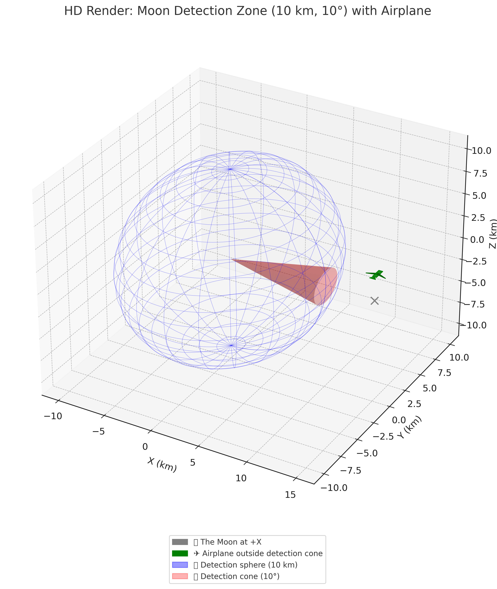

Celestial Detection Visualizations
Interactive scenarios showing search radius and detection margins for celestial body alignment tracking.

🔵 Detection sphere: 10 km radius
🔺 Detection cone: wide 50° margin

🔵 Detection sphere: 10 km radius
🔺 Detection cone: 10° margin

🔵 Detection sphere: 50 km radius
🔺 Detection cone: 20° margin toward the Sun

🔵 Detection sphere: 20 km radius
🔺 Detection cone: 50° margin toward the Sun